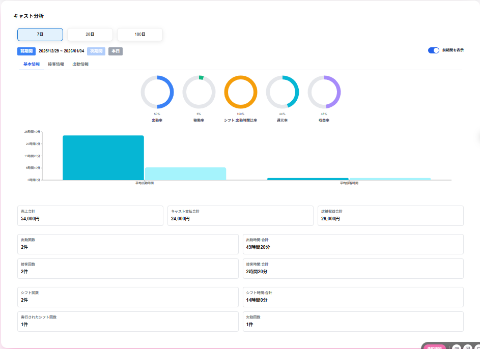

基本情報の画面には以下の項目が表示されます。
円グラフには以下の項目が表示されます。
・出勤率
出勤率が表示されます。
出勤率は、シフト実行数 ÷（シフト実行数＋欠勤数）で算出します。
・稼働率
稼働率（％）が表示されます。
稼働率は、接客時刻 ÷ 出勤時刻で算出します。
・シフト-出勤時刻比率
シフト:出勤時刻比率（％）が表示されます。
シフト:出勤時刻比率は、出勤時刻 ÷ シフト時刻で算出します。
・還元率
還元率（％）が表示されます。
還元率は、キャスト支払合計 ÷ 売上合計で算出します。
・収益率
収益率（％）が表示されます。
収益率は、店舗収益合計 ÷ 売上合計で算出します。
棒グラフには以下の項目が表示されます。
・平均出勤時刻
平均出勤時刻が表示されます。
平均出勤時刻は、出勤時刻合計 ÷ 出勤回数で算出します。
グラフ上にマウスを合わせると、該当時刻帯の以下の項目がポップアップで表示されます。
・平均出勤時刻(現期間)
選択している期間の平均出勤時刻が表示されます。
・平均出勤時刻(前期間)
選択している期間の前の平均出勤時刻(現期間)が表示されます。
※前期間を表示を選択していない場合は表示されません。
・平均接客時刻
平均接客時刻が表示されます。
平均接客時刻は、接客時刻合計 ÷ 接客回数で算出します。
グラフ上にマウスを合わせると、該当時刻帯の以下の項目がポップアップで表示されます。
・平均接客時間(現期間)
選択している期間の平均接客時刻が表示されます。
・平均接客時間(前期間)
選択している期間の前の平均接客時刻(前期間)が表示されます。
※前期間を表示を選択していない場合は表示されません。
